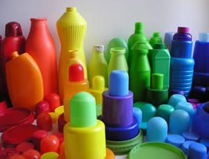
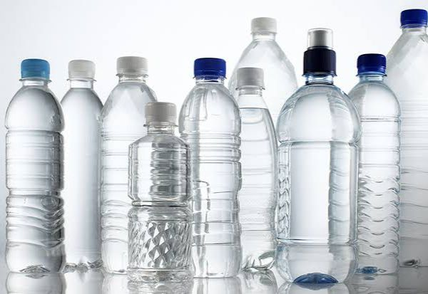
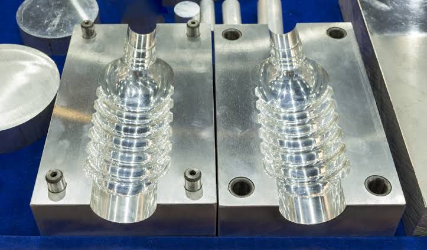
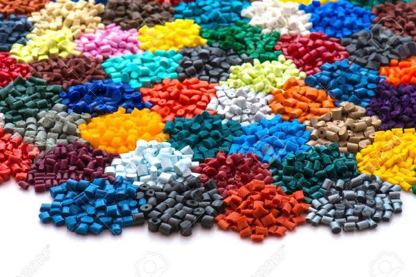
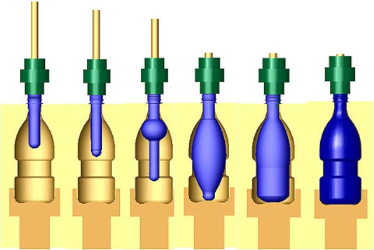
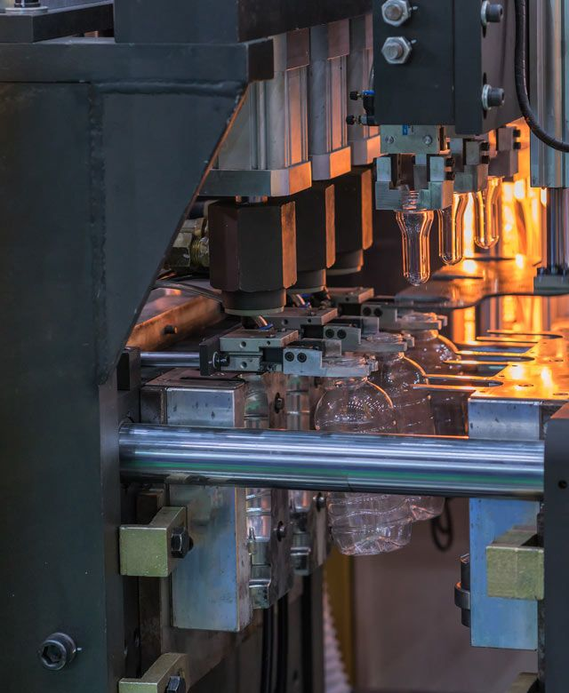
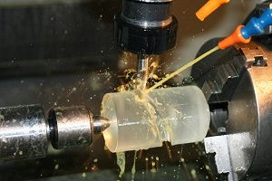

Origem do Plástico
A ideia do plástico começou a ser idealizada em meados do século XIX, mais especificamente em 1869, o tipógrafo americano John Wesley Hyatt, para substituir o marfim na fabricação de bolas de bilhar – esporte tão popular que já ameaçava a população de elefantes, descobriu que um material a base de nitrato de celulose tornava-se um filme sólido e flexível. A chamada celuloide era formada por uma mistura de fibras de algodão com ácidos.
Americano descobridor do plastico John Wesley Hyatt
Imagem: O Esplorador
Desde então o plástico vem sendo integrado nos mais diversos setores, como ocorreu na segunda guerra mundial, onde EUA teve seu maior desenvolvimento nesse setor por fabricar diversos utensílios de plásticos para os soldados, depois de alguns anos, na corrida espacial. Mas como sabemos, o plástico não é lá tudo de bom. Já nos anos 2000 começaram a perceber efeitos negativos para o meio ambiente, e desde então, apesar de sua alta fabricação, vem sendo necessária uma solução para tanto lixo.
Processo de Fabricação
O processo de produção do plástico acontece em fábricas de grande porte, em que os materiais são moldados em estruturas utilizáveis. Há duas especificações principais e que são as mais utilizadas para denominar o desenvolvimento dos materiais plásticos.
Indústria de produção de plástico Nomus
Imagem: Nomus
Entenda como essas classificações funcionam:
Termoendurecíveis: ganham a forma de produtos rígidos, através do calor e por reações químicas, especialmente utilizadas para moldar novamente o componente.
Plásticos Termoendurecíveis
Imagem: Plástic Collectors
Termoplástico: é aquele que tem forma endurecida quando está frio e quando submetido a alta temperatura, possui forma líquida, de maneira que seja possível moldar os produtos inúmeras vezes, gerando e incentivando o reaproveitamento eficiente pelas indústrias.
Plásticos Termoplástico
Imagem: Plástic Collectors
O processo produtivo do plástico segue as seguintes etapas:
1 - Preparação do molde a matriz é revestida com um agente desmoldante para ajudar o descolamento e muitas vezes é pré-aquecido em temperatura específica para o material;
Molde de plástico
Imagem: Mundo Plástico
2 - Fundição: a resina sintética é mesclada como um agente de cura ou injetada na matriz, preenchendo a sua cavidade;
Resina sintética
Imagem: Mundo Plástico
3 - Cura: o processo de fundição é curado no molde, até que se solidifique (quando o molde é exposto ao calor, tornando mais rápido o tempo de cura para alguns polímeros);
Fundição do plástico
Imagem: Mundo Plástico
4 - Desmoldagem: a matriz é aberta e a parte curada é retirada.
Desmoldagem do plástico
Imagem: Mundo Plástico
5 - Aparar: os canais de fundição, por meio de encanamentos e costuras são lixados ou cortados conforme a proporção desejada.
Aparagem do plástico
Imagem: Tudo sobre Plásticos
Poluições causadas pelo plástico
O plástico tem uma grande permanência no ambiente. Sua produção em massa, a partir da década de 1940,levou a uma quantidade imensa desse material na natureza , visto que o produto não se degrada, o que facilita o acúmulo de resíduos sólidos e o crescente aumento de lixo marinho, com graves consequências para a fauna. O lixo acumulado na praia ou na superfície do mar representa apenas 1% do plástico que é despejado nos oceanos, porque quase tudo fica concentrado a centenas de metros de profundidade.
Pouluição causada pelo plástico
Imagem: Blog Saneamento
A poluição causada pelo plástico compromete a sobrevivência de mais de 800 espécies marinhas, 15 das quais já se encontram ameaçadas. A cada ano, cerca de 8 milhões de toneladas de plástico acabam no oceano, o que equivale a um caminhão de lixo cheio desse produto jogado no mar a cada minuto. De acordo com o Programa das Nações Unidas para o Meio Ambiente (Pnuma), já contêm plástico entre 60 a 90% da areia que se acumula nas linhas costeiras, a superfície e o fundo do mar. Os itens mais comuns são bitucas de cigarro, sacolas e recipientes de alimentos e bebidas.
Representação da poluição causada pelo plástico comparada a um iceberg
Imagem: Letras Ambientais
“O plástico, no ambiente marinho, sofre ações do meio (radiação solar, variação térmica, diferentes níveis de oxigênio, energia das ondas e presença de fatores abrasivos, como areia, cascalho ou rocha), fica fragmentado e passa a ter aparência de alimento para muitos animais, causando-lhes a morte e interferindo no ciclo reprodutivo de muitas espécies. Uma transição para um novo modelo de consumo, que reduza significativamente o impacto ambiental dos resíduos gerados, é urgente. Nesse cenário, o plástico de uso único é um dos grandes vilões da contaminação ambiental, principalmente das águas, mas é possível produzi-lo agredindo bem menos o meio ambiente”, observa Joaquim Maia Neto em seu estudo.
"O plástico que você usa uma vez tortura o oceano para sempre"
Imagem: Conexão Planeta
O plástico consumido por espécies marinhas também entra na cadeia alimentar humana através do consumo de peixes. Nos últimos 20 anos, a proliferação de microplásticos, microesferas e plásticos descartáveis evidenciaram esse problema. A poluição ambiental também foi agravada pela pandemia do coronavírus, que gerou 52 mil toneladas de resíduos médicos entre abril de 2020 e março de 2021, de acordo com a Campanha Mares Limpos, da Organização das Nações Unidas (ONU). Outro dado torna o cenário mais turvo: uma máscara cirúrgica, dessas comumente usadas para se proteger da covid-19, leva até 450 anos para se degradar.
Microplástico no oceano
Imagem: Iberdrola
A geração de resíduos sólidos é apenas uma parte do problema causado pelo plástico. A principal matéria-prima para a confecção das embalagens e utensílios descartáveis é o petróleo, e o seu processo de produção é intensivo na emissão de gases de efeito estufa (GEE), explica o estudo de Joaquim Maia Neto.
“Se o plástico é produzido a partir do petróleo — o que corresponde a mais de 90% do total —, problemas decorrem, também, de seu processo de fabricação. Os impactos das refinarias vão desde as consequências dos estudos sísmicos realizados na etapa de exploração até o consumo de grandes quantidades de água e de energia, geração de vultosas quantidades de despejo líquido, liberação de diversos gases nocivos na atmosfera (como os policíclicos aromáticos), produção de resíduos sólidos de difícil tratamento, além dos frequentes vazamentos de petróleo em ambiente marinho, como ocorreu com a British Petrolium (BP), nos Estados Unidos, e com a Chevron Brasil, no estado do Rio de Janeiro”.
Dados chocantes sobre a poluição plásticas
Imagem: Senac